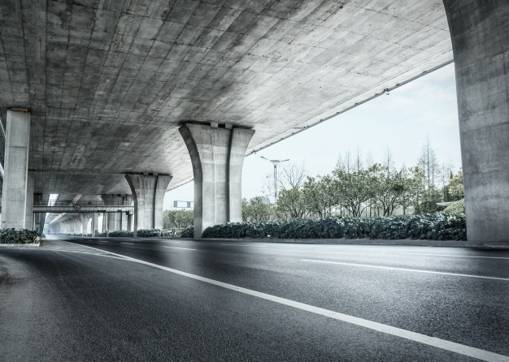

HALUCINACIUM ARCH


GREAT MINDS dON'T THINK A LIKE...
Modern architecture is a style of building that emphasizes function and a streamlined form over ornamentation. This design aesthetic is a departure from more elaborate and decorated homes like a Queen Anne, Victorian, or Gothic Revival styles. Modern architecture usually involves sharp, clean lines.
learn more


Planning for 2050
2050 may actually resemble walkable neighborhoods common in the early to mid-Twentieth Century.